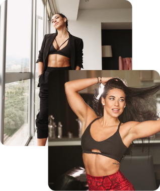

¿POR QUÉ TE PUEDO AYUDAR?
Guapa, te entiendo, estar en un lugar así no es raro, es bastante común.
Se vuelve el “normal” y decimos cosas como “me tengo que amar incondicionalmente” aún si tu
cuerpo no cumple tus estándares.
Conozco ese lugar íntimamente. Yo solía ser esa persona y sufría en silencio, deseaba en
silencio, trataba de aceptarme sin éxito en silencio.
Hasta que un día me harté de meditar todos los días 20 min, de ir con mi terapeuta y contarle
todos mis problemas y traumas, de buscar atajos para tener un cuerpazo, y más que nada de verme
haciendo muchas cosas con pocos resultados ni al nivel que yo quería.
Descubrí las 3 mentiras que estaba creyendo y que me mantenían en este constante estado de
escasez mental.
Con ese ingrediente fui con éxito, determinación, disciplina y convicción a conquistar TODAS mis
alguna vez imposibles y lejanas metas.
Hoy quiero compartirlo contigo, para que vivas esta transformación. Es completamente posible
para ti. Lo sé con convicción.
